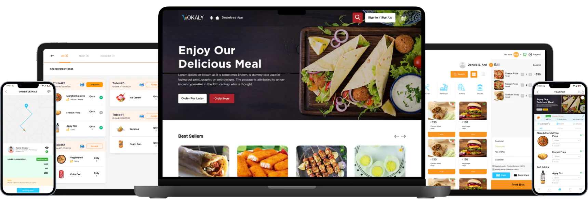
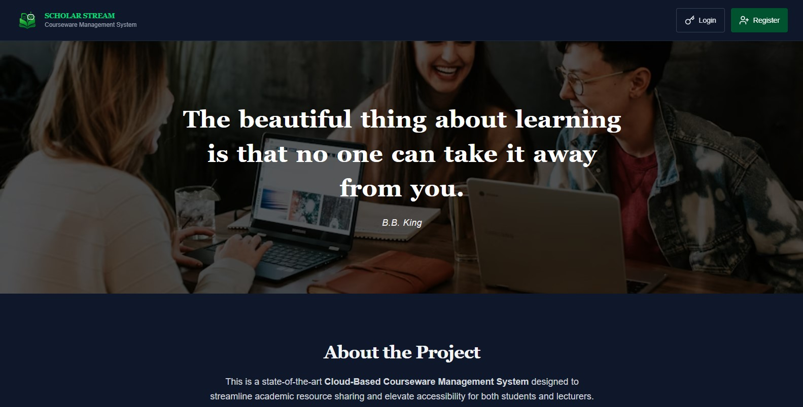
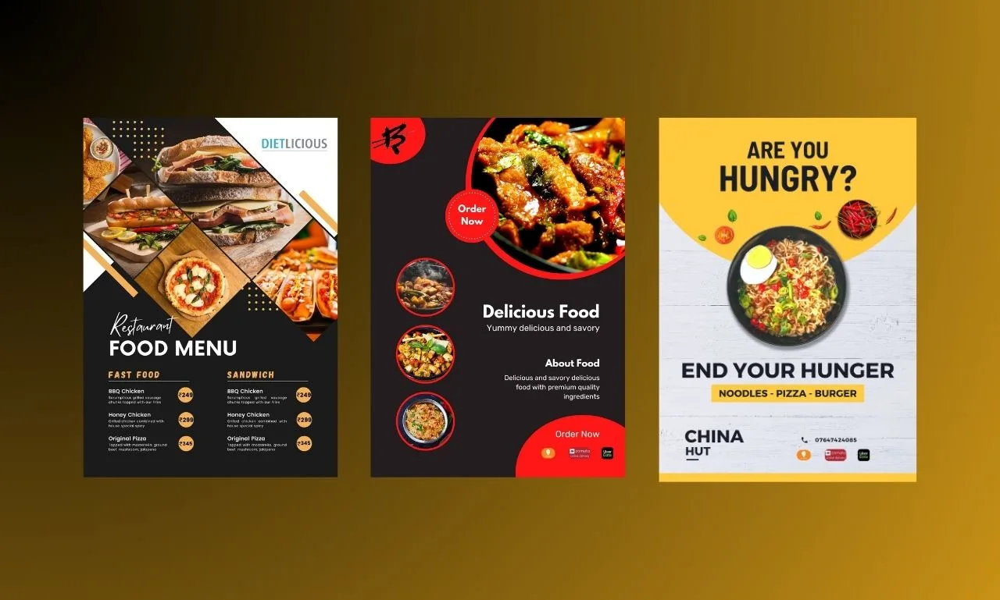
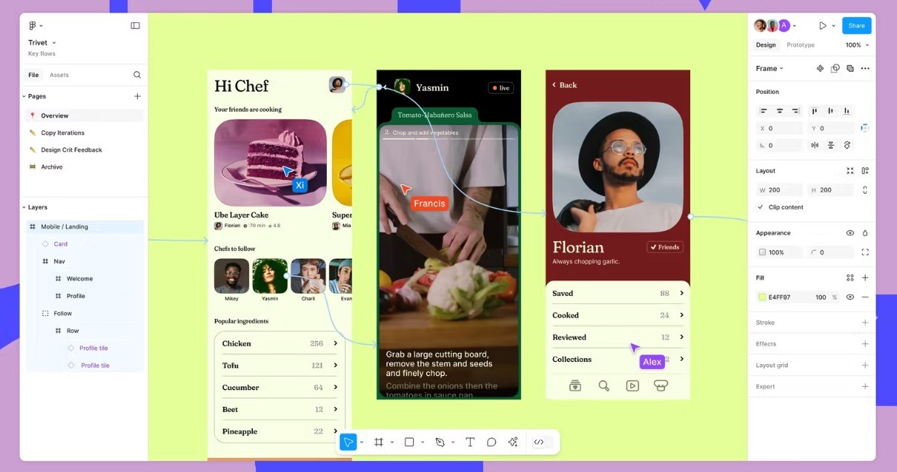

neksDev
01
Aneks Library is a comprehensive full-stack digital academic library platform developed to modernize the way educational resources are stored, managed, and accessed. It provides a secure environment where students, lecturers, researchers, and administrators can interact through dedicated role-based dashboards tailored to their responsibilities.
The platform supports secure authentication, resource uploads and downloads, advanced search and filtering, bookmarking, approval workflows, and administrative controls. Designed with scalability, usability, and performance in mind, Aneks Library streamlines academic resource management while promoting collaboration, knowledge sharing, and easy access to quality educational materials from anywhere.
HTML5 | CSS3 | JavaScript | Firebase | Supabase
02
This portfolio website serves as my personal digital showcase, highlighting my expertise in programming, web development, UI/UX design, and graphic design. Built with a focus on clean architecture, responsive layouts, smooth interactions, and modern design principles, it provides visitors with an engaging overview of my professional journey, technical skills, services, and featured projects.
Every section has been carefully crafted to demonstrate my ability to combine creativity with functionality, delivering fast, accessible, and user-friendly web experiences. From responsive design and interactive animations to optimized performance and seamless navigation, this portfolio reflects my commitment to building high-quality digital products that leave a lasting impression.
HTML5 | CSS3 | JavaScript | Firebase
03
An advanced e-commerce platform built to provide a seamless online shopping experience for customers while simplifying business operations for administrators. Users can browse products, search by category, add items to their cart, place orders, make secure purchases, and conveniently track the status of their deliveries through an intuitive interface.
The platform also includes a powerful administrative dashboard for managing products, inventory, customer records, payments, and order fulfillment. Designed with responsiveness, security, and usability in mind, it delivers an efficient digital marketplace that enhances customer satisfaction and supports business growth.
HTML5 | CSS3 | JavaScript | PHP | MySQL
04
Scholar Stream is a responsive online academic library platform designed to simplify the discovery, organization, and accessibility of educational resources. It provides students, lecturers, researchers, and lifelong learners with quick access to books, journals, research papers, and other scholarly materials through a clean and user-friendly interface.
Built with performance and accessibility as core priorities, the platform features efficient resource categorization, intuitive navigation, responsive layouts, and optimized search functionality. Scholar Stream promotes continuous learning by making quality academic content easily accessible across desktop and mobile devices.
HTML5 | CSS3 | JavaScript | PHP | MySQL
05
This collection showcases user-centered UI/UX design projects created for modern web and mobile applications. Each project begins with understanding user needs and business goals before progressing through research, wireframing, prototyping, visual design, and usability testing to ensure meaningful digital experiences.
Every interface is carefully designed with a strong emphasis on accessibility, consistency, intuitive navigation, and responsive layouts. The result is a series of visually engaging, functional, and user-friendly designs that improve interaction, simplify complex workflows, and enhance overall user satisfaction.
Figma | Adobe XD | Wireframing | Prototyping
06
This portfolio features a diverse collection of graphic design projects developed for businesses, organizations, brands, and personal clients. The work includes logo design, brand identity systems, flyers, posters, banners, social media graphics, marketing materials, and promotional campaigns tailored to different audiences.
Each design combines creativity with strategic visual communication to produce compelling and memorable brand experiences. Every project focuses on delivering clean layouts, strong typography, effective color harmony, and impactful messaging that helps clients communicate their ideas with confidence and professionalism.
Adobe Photoshop | Illustrator | CorelDRAW | Canva
.jpg)




